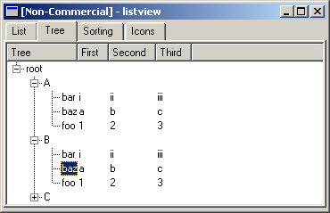

Tabela
Iremos utilizar o QListView para criar nossa tabela. Já que quando estiver lidando com dados mais complexos e multi-colunas, o widget QListView é mais adequado que o QListBox. O QListView pode ser exibir dados multi-colunas armazenado como uma lista ou uma estrutura em árvore. Cada coluna pode ter um cabeçalho que permite ordenar a lista pelo clique sobre ela. A figura abaixo mostra um exemplo da aplicação.
O widget listview é bastante complexo, por isso o exemplo é dividido em quatro partes, cada uma mostra uma aba diferente da aplicação exemplo. Nós começamos com o caso mais básico – uma lista simples com várias colunas. Isso é mostrado na aba com o título “List” mostrada na figura 13-3. O código que cria a listview é mostrado no exemplo abaixo:
QWidget *ListViewExample::setupListTab()
{
m_listView = new QListView();
m_listView->addColumn( "Foo" );
m_listView->addColumn( "Bar" );
m_listView->addColumn( "Baz" );
m_listView->setAllColumnsShowFocus( true );
new QListViewItem( m_listView, "(1, 1)", "(1, 2)", "(1, 3)" );
new QListViewItem( m_listView, "(2, 1)", "(2, 2)", "(2, 3)" );
new QListViewItem( m_listView, "(3, 1)", "(3, 2)", "(3, 3)" );
new QListViewItem( m_listView, "(4, 1)", "(4, 2)", "(4, 3)" );
return m_listView;
}
O código mostra os passos básicos necessários para usar a listview. Primeiro, algumas colunas são criadas. Depois, qualquer configuração especial é feita. Nesse caso, nos certificamos que a seleção é mostrada sobre toda a linha, e não sobre a primeira coluna somente. Finalmente, preenchemos a lista pela criação de um conjunto de QListBiewItems que referencem-se a listview como parent.
O widget listview é bastante complexo, por isso o exemplo é dividido em quatro partes, cada uma mostra uma aba diferente da aplicação exemplo. Nós começamos com o caso mais básico – uma lista simples com várias colunas. Isso é mostrado na aba com o título “List” mostrada na figura 13-3. O código que cria a listview é mostrado no exemplo abaixo:
QWidget *ListViewExample::setupListTab()
{
m_listView = new QListView();
m_listView->addColumn( "Foo" );
m_listView->addColumn( "Bar" );
m_listView->addColumn( "Baz" );
m_listView->setAllColumnsShowFocus( true );
new QListViewItem( m_listView, "(1, 1)", "(1, 2)", "(1, 3)" );
new QListViewItem( m_listView, "(2, 1)", "(2, 2)", "(2, 3)" );
new QListViewItem( m_listView, "(3, 1)", "(3, 2)", "(3, 3)" );
new QListViewItem( m_listView, "(4, 1)", "(4, 2)", "(4, 3)" );
return m_listView;
}
O segundo caso de uso é exibir os itens da listview em uma hierarquia de árvore. Isso é mostrado na aba com o titulo “Tree”. O código que cria a listview é mostrado no exemplo abaixo. Quando executar a aplicação exemplo, experimente clicar nos cabeçalhos da coluna para ordenar os itens. Observe que cada seção (A, B ou C) é ordenada separadamente.
QWidget *ListViewExample::setupTreeTab()
{
m_treeView = new QListView();
m_treeView->addColumn( "Tree" );
m_treeView->addColumn( "First" );
m_treeView->addColumn( "Second" );
m_treeView->addColumn( "Third" );
m_treeView->setRootIsDecorated( true );
QListViewItem *root = new QListViewItem( m_treeView, "root" );
QListViewItem *a = new QListViewItem( root, "A" );
QListViewItem *b = new QListViewItem( root, "B" );
QListViewItem *c = new QListViewItem( root, "C" );
new QListViewItem( a, "foo", "1", "2", "3" );
new QListViewItem( a, "bar", "i", "ii", "iii" );
new QListViewItem( a, "baz", "a", "b", "c" );
new QListViewItem( b, "foo", "1", "2", "3" );
new QListViewItem( b, "bar", "i", "ii", "iii" );
new QListViewItem( b, "baz", "a", "b", "c" );
new QListViewItem( c, "foo", "1", "2", "3" );
new QListViewItem( c, "bar", "i", "ii", "iii" );
new QListViewItem( c, "baz", "a", "b", "c" );
return m_treeView;
}
O código é estruturado da mesma forma que a lista básica. A diferença é que ao invés de usar um widget listview como parent para os itens, alguns itens possuem outros itens como parent. As razões para usar esse tipo de organização é fornecer um feedback para o usuário. Somente ver o item raiz não diz ao usuário que existem mais itens. O sinal de mais a direita do texto diz isso ao usuário.